Film finishes 10
On the picture, before titles. Set globally or per segment, and vary them across scenes rather than one look on everything.

--finish grain or "finish": "grain"
film grain
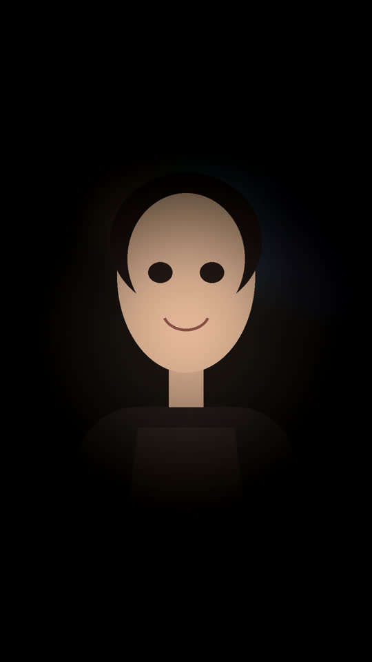
--finish vignette or "finish": "vignette"
darkened edges
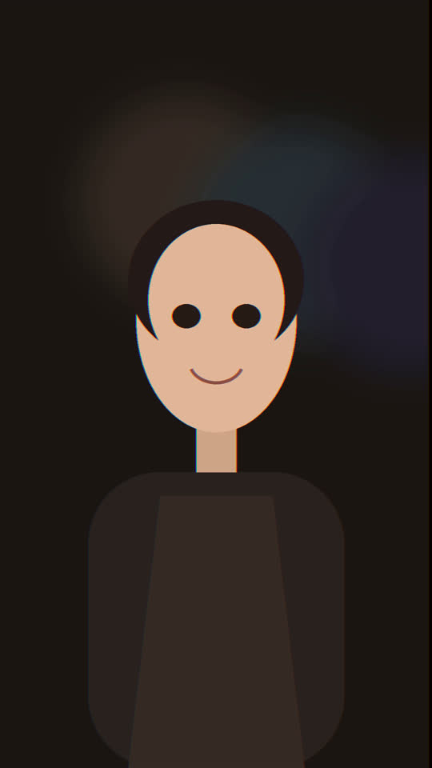
--finish chroma or "finish": "chroma"
RGB channel offset
--finish scan-lines or "finish": "scan-lines"
CRT scan lines

--finish warm or "finish": "warm"
warm grade

--finish cool or "finish": "cool"
cool grade
--finish teal or "finish": "teal"
subtle teal shadows, warm skin

--finish crushed or "finish": "crushed"
crushed blacks

--finish mono or "finish": "mono"
black and white
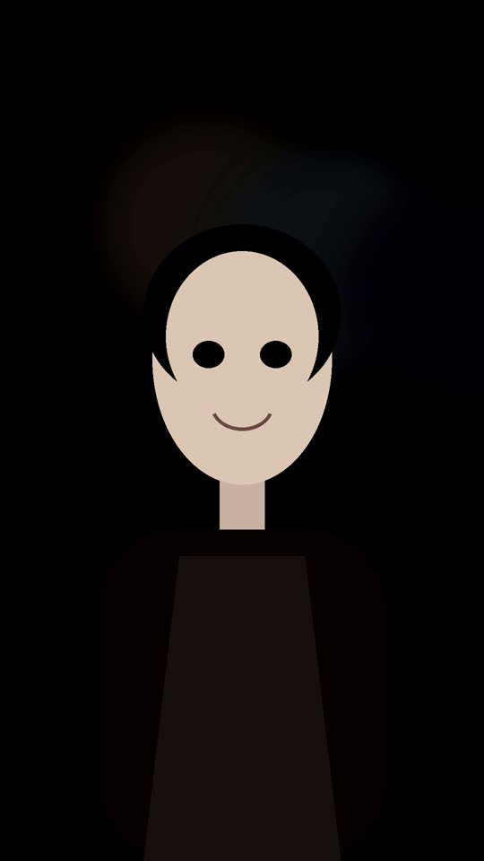
--finish bleach or "finish": "bleach"
bleach-bypass grade
Beat-sync 3
When a music bed is set, accents can land on the music. Speech cuts stay put.

--beat-sync or "beatSync": true
snap punches, SFX, fx hits and title entrances to the bed (default when a bed is set)

--no-beat-sync or "beatSync": false
leave those times alone

"beatWindow": 0.12
max snap distance in seconds; speech cuts never move
Looks 5
The overall edit. --look also picks a default caption style.

--look kinetic
every word animates, plus a kinetic title behind the head (default)
--look oneword
one word at a time, size and face changing per word, type cards, cycling pairings (kit/looks/oneword.md)

--look muse
pill captions and kinetic titles behind the head

--look classic
the original phrase captions and a spray-painted hero word, no titles
--look one-word
one big word at a time on screen, kinetic and punchy, plus titles behind the head
Caption styles 7
Override the look with --style, or "captionStyle" in captions.js.
--style kinetic or "captionStyle": "kinetic"
two-font lockup, hero word big in the display face
--style oneword or "captionStyle": "oneword"
one word at a time, key word big in the display face with the phrase building under it
--style pill or "captionStyle": "pill"
3 to 5 words in a lower-third pill
--style hormozi or "captionStyle": "hormozi"
bold caps with a cyan active word
--style karaoke or "captionStyle": "karaoke"
colour wipe as each word is said
--style classic or "captionStyle": "classic"
the original phrase captions
--style one-word or "captionStyle": "one-word"
one big word at a time, punchy, in the display face
Font pairings 17
Two faces as a lockup. Your own licensed fonts go in kit/fonts/local/.

--fonts theme or "fonts": "theme"
the theme's own fonts (default)
--fonts modern or "fonts": "modern"
heavy caps grotesk + script tail overlapping its baseline (stand-in for a modern bold sans + Constane)
--fonts druk or "fonts": "druk"
WIDE heavy caps + a small tracked clean-sans caps line justified to it (free stand-in for Druk Wide + Helvetica)

--fonts elegant or "fonts": "elegant"
classical serif caps + formal script crossing it (free stand-in for Optitimes + Sloop)

--fonts editorial or "fonts": "editorial"
condensed serif italic hero + roman text serif support (free stand-in for Vanguard + Athelas)
--fonts literata or "fonts": "literata"
Archivo Black + Literata: heavy caps grotesk over a quiet serif line. Clean; good for hooks and titles
--fonts bricolage or "fonts": "bricolage"
Bricolage Grotesque + Gloock: a characterful bold grotesk with a high-contrast display serif. Clean; good for hooks and titles
--fonts pirata or "fonts": "pirata"
Pirata One + Nunito Sans: blackletter hero over a quiet bold sans line
--fonts michroma or "fonts": "michroma"
Michroma + Cardo: wide techno caps with a classical italic underneath
--fonts redhat or "fonts": "redhat"
Red Hat Display + Red Hat Mono: heavy display sans over tracked mono caps
--fonts jakarta or "fonts": "jakarta"
Plus Jakarta Sans + Ribeye: clean bold sans with a playful display script on top. For Instagram Edits style reels
--fonts grotesk-times or "fonts": "grotesk-times"
tight bold grotesk + a book serif (free stand-in for ID Grotesk + Times)
--fonts avantgarde or "fonts": "avantgarde"
geometric caps + a soft fat serif (free stand-in for Avant Garde + Cooper)
--fonts recoleta or "fonts": "recoleta"
soft old-style serif + small tracked grotesk caps (free stand-in for Recoleta + Berthold)
--fonts haas or "fonts": "haas"
one neo-grotesk, heavy over regular (free stand-in for Neue Haas Grotesk Display + Helvetica Neue)
--fonts wabbit or "fonts": "wabbit"
heavy caps grotesk + a cartoon brush (free stand-in for Archivo Black + Wascally Wabbit). For Instagram Edits style reels
--fonts instrument or "fonts": "instrument"
Instrument Serif Italic + Inter Tight: a condensed italic serif for the key word over a clean grotesk for the rest. The oneword look's pairing
Themes 2
Colours, default fonts, optional logo.

--theme aigent
AIgent brand guide, cyan accent (default)

--theme neutral
unbranded, offline, system fonts, no logo
Title entrances 8
One kinetic title per beat. Flicker only on the hook and the payoff. Default layer is in front of the person.
"entrance": "stagger-rise" on a mode 7 title
kinetic title entrance (each used at most once per video)
"entrance": "slam" on a mode 7 title
kinetic title entrance (each used at most once per video)
"entrance": "blur-rise" on a mode 7 title
kinetic title entrance (each used at most once per video)
"entrance": "slide-left" on a mode 7 title
kinetic title entrance (each used at most once per video)
"entrance": "elastic" on a mode 7 title
kinetic title entrance (each used at most once per video)
"entrance": "flip" on a mode 7 title
kinetic title entrance (each used at most once per video)
"entrance": "pop-zoom" on a mode 7 title
kinetic title entrance (each used at most once per video)
"entrance": "drop" on a mode 7 title
kinetic title entrance (each used at most once per video)
Title layer 3
Front, behind the head, or auto, per title or for the job. Offer this per title. Agents and --preset auto use auto unless the preset says otherwise.
"layer": "front" or "titleLayer": "front"
the whole title sits in front of the person (default)
"layer": "behind" or "titleLayer": "behind"
the hero word goes behind the head; partner words stay in front. Slam still lands low and rises.
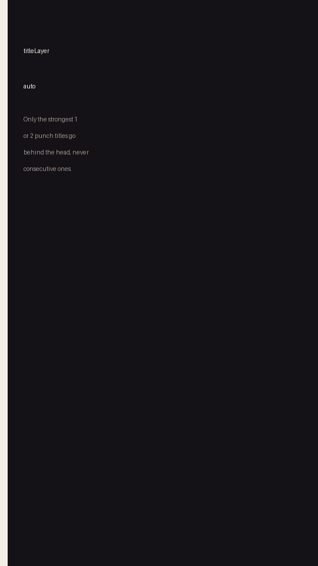
"layer": "auto" or "titleLayer": "auto"
only the strongest 1 or 2 punch titles go behind the head, never consecutive ones (hook and payoff when they are not neighbours)
Transitions 56
Named cuts in cut.json. The glitch seam is the default.
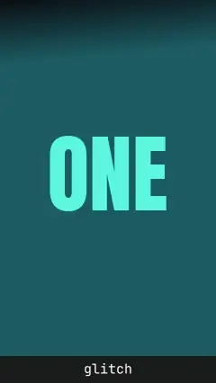
"transition": "glitch"
hard cut with the glitch seam (default)
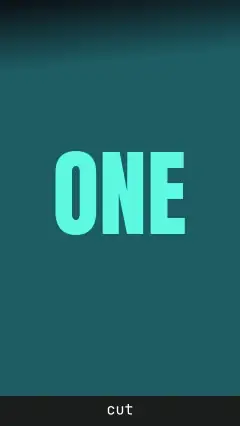
"transition": "cut"
hard cut, no seam
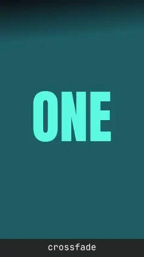
"transition": "crossfade"
ffmpeg xfade fade
"transition": "dissolve"
ffmpeg xfade dissolve
"transition": "fade-fast"
ffmpeg xfade fadefast
"transition": "fade-slow"
ffmpeg xfade fadeslow
"transition": "film"
ffmpeg xfade fadegrays
"transition": "dip"
ffmpeg xfade fadeblack
"transition": "dip-black"
ffmpeg xfade fadeblack
"transition": "flash"
ffmpeg xfade fadewhite
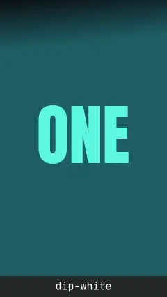
"transition": "dip-white"
ffmpeg xfade fadewhite
"transition": "whip"
ffmpeg xfade slideleft
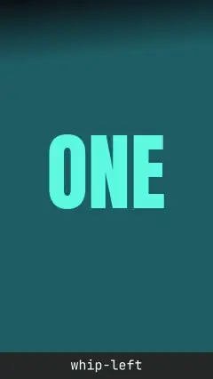
"transition": "whip-left"
ffmpeg xfade slideleft
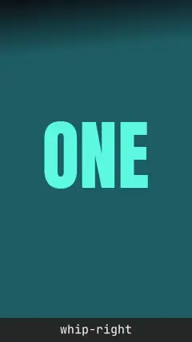
"transition": "whip-right"
ffmpeg xfade slideright
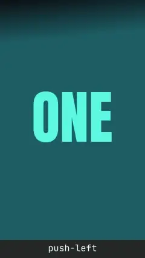
"transition": "push-left"
ffmpeg xfade slideleft
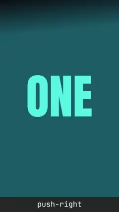
"transition": "push-right"
ffmpeg xfade slideright
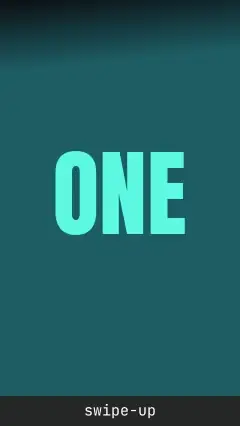
"transition": "swipe-up"
ffmpeg xfade slideup
"transition": "swipe-down"
ffmpeg xfade slidedown
"transition": "cover-left"
ffmpeg xfade coverleft
"transition": "cover-right"
ffmpeg xfade coverright
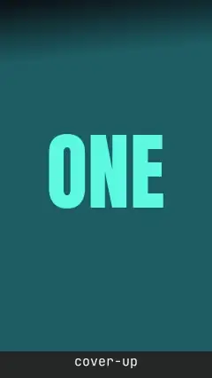
"transition": "cover-up"
ffmpeg xfade coverup
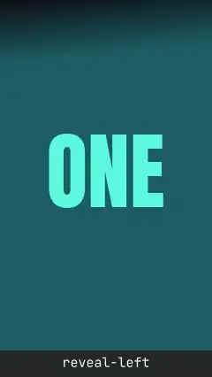
"transition": "reveal-left"
ffmpeg xfade revealleft
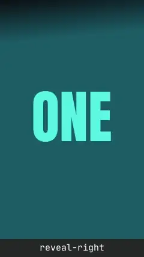
"transition": "reveal-right"
ffmpeg xfade revealright
"transition": "wipe"
ffmpeg xfade wipeleft
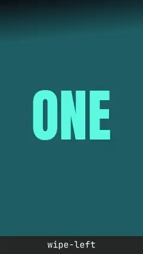
"transition": "wipe-left"
ffmpeg xfade wipeleft
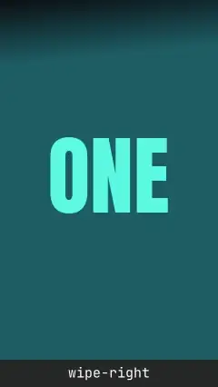
"transition": "wipe-right"
ffmpeg xfade wiperight
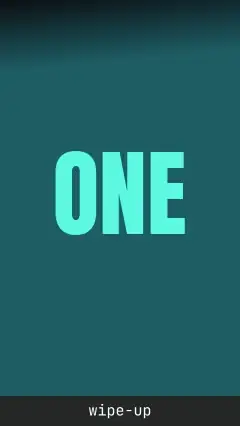
"transition": "wipe-up"
ffmpeg xfade wipeup
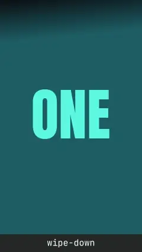
"transition": "wipe-down"
ffmpeg xfade wipedown
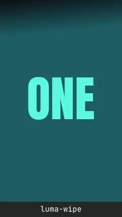
"transition": "luma-wipe"
ffmpeg xfade smoothleft
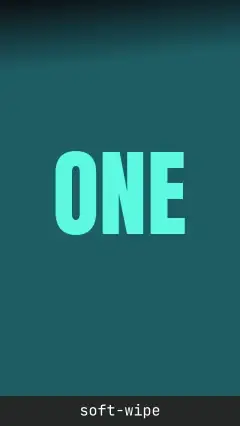
"transition": "soft-wipe"
ffmpeg xfade smoothleft
"transition": "iris"
ffmpeg xfade circleopen
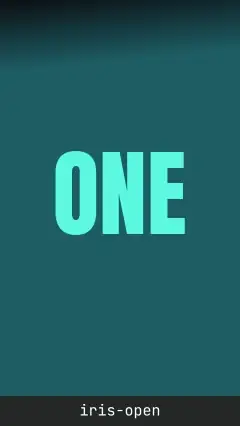
"transition": "iris-open"
ffmpeg xfade circleopen
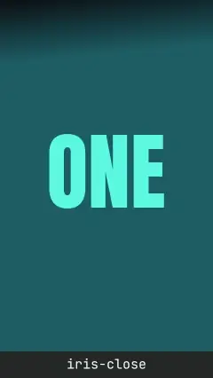
"transition": "iris-close"
ffmpeg xfade circleclose
"transition": "circle-crop"
ffmpeg xfade circlecrop
"transition": "doorway"
ffmpeg xfade horzopen
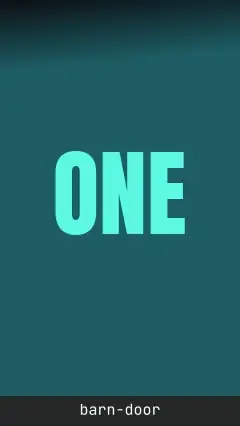
"transition": "barn-door"
ffmpeg xfade vertopen
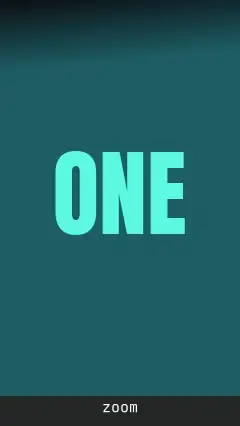
"transition": "zoom"
ffmpeg xfade zoomin
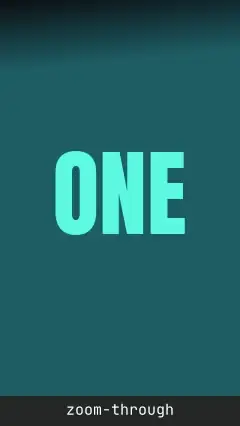
"transition": "zoom-through"
ffmpeg xfade zoomin
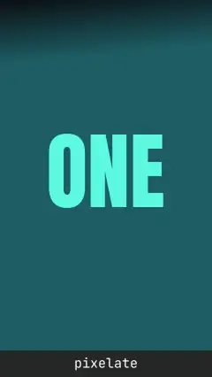
"transition": "pixelate"
ffmpeg xfade pixelize
"transition": "blur"
ffmpeg xfade hblur
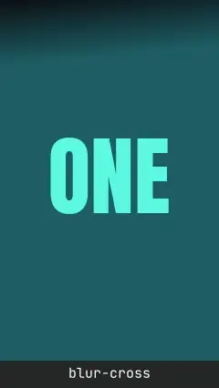
"transition": "blur-cross"
ffmpeg xfade hblur
"transition": "radial"
ffmpeg xfade radial
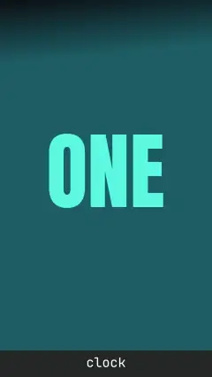
"transition": "clock"
ffmpeg xfade radial
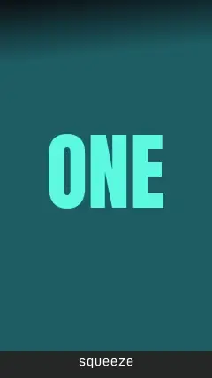
"transition": "squeeze"
ffmpeg xfade squeezev
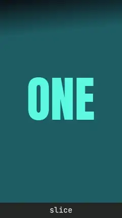
"transition": "slice"
ffmpeg xfade hlslice
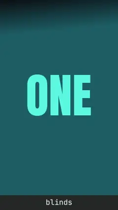
"transition": "blinds"
ffmpeg xfade hlslice
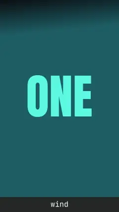
"transition": "wind"
ffmpeg xfade hlwind
"transition": "warp"
ffmpeg xfade diagbr
"transition": "diagonal"
ffmpeg xfade diagbr
"transition": "distance"
ffmpeg xfade distance
"transition": "slats"
drawn slats (xfade custom expression, kit/xfx.cjs)
"transition": "checkerboard"
drawn checkerboard (xfade custom expression, kit/xfx.cjs)
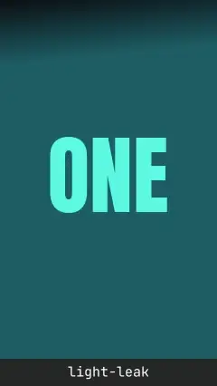
"transition": "light-leak"
drawn light-leak (xfade custom expression, kit/xfx.cjs)
"transition": "zoom-blur"
drawn zoom-blur (xfade custom expression, kit/xfx.cjs)
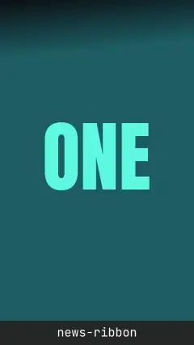
"transition": "news-ribbon"
drawn news-ribbon (xfade custom expression, kit/xfx.cjs)
"transition": "breaking-news"
drawn news-ribbon (xfade custom expression, kit/xfx.cjs)
Graphics 29
Original overlay graphics drawn in the theme colours and fonts, each with its own entrance and exit: captions.js flips (modes 9 to 37) or a reel-graphics block in a Reel.md. Words on them must be words you say (kit/spoken.cjs). Layer front, behind or auto: behind tucks only the top of your head over the graphic, never your face. Bring your icon or screen recording, or the kit draws a neutral placeholder. Teardown maps the first three from a reference (kit/graphics.json).
"mode": 9 (entrance burst-pop)
list number sticker: an italic serif word (FIRST, SECOND, NEXT) set on a flat seal in the theme accent; the seal can sit behind your head
"mode": 10 (entrance tile-pop)
app or logo label: a top-lit icon tile springs in and a name plate wipes out under it; your icon image, or a monogram of the name
"mode": 11 (entrance card-rise)
screen card: a dark window card (title bar, address pill, accent rim with a glow), inset in the lower middle, showing your screenshot or screen recording; optional pointer clicks and pan and zoom keyframes on beats you say
"mode": 12 (entrance bar-wipe)
lower third name tag: an accent rule springs up, a name plate wipes out from it and a small line follows on an accent tab
"mode": 13 (entrance count-up)
big number callout: the number blurs in and counts up to its value in equal digit cells, accent gradient and glow, a label plate rises under it
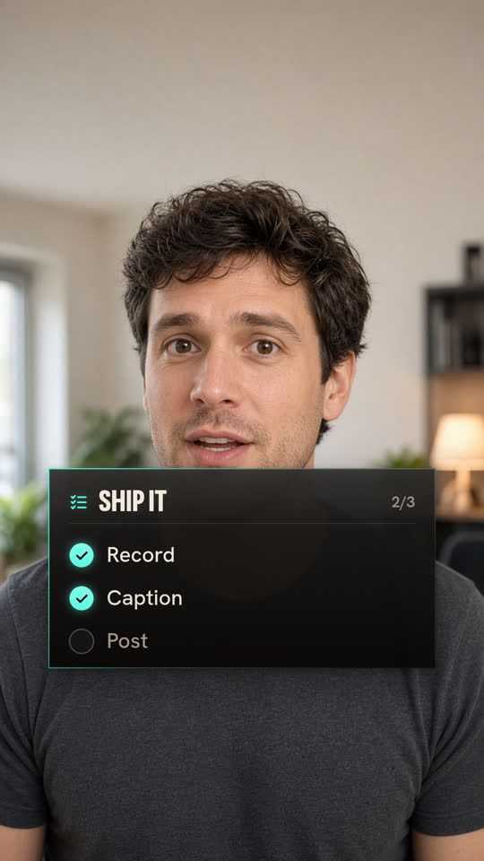
"mode": 14 (entrance tick-in)
checklist card: rows slide in, and each check springs in and draws its tick as you say its item; a done count in the header
"mode": 15 (entrance quote-unfold)
quote card: a quote mark springs in, the line fades up word by word in an italic serif, with a small attribution under it
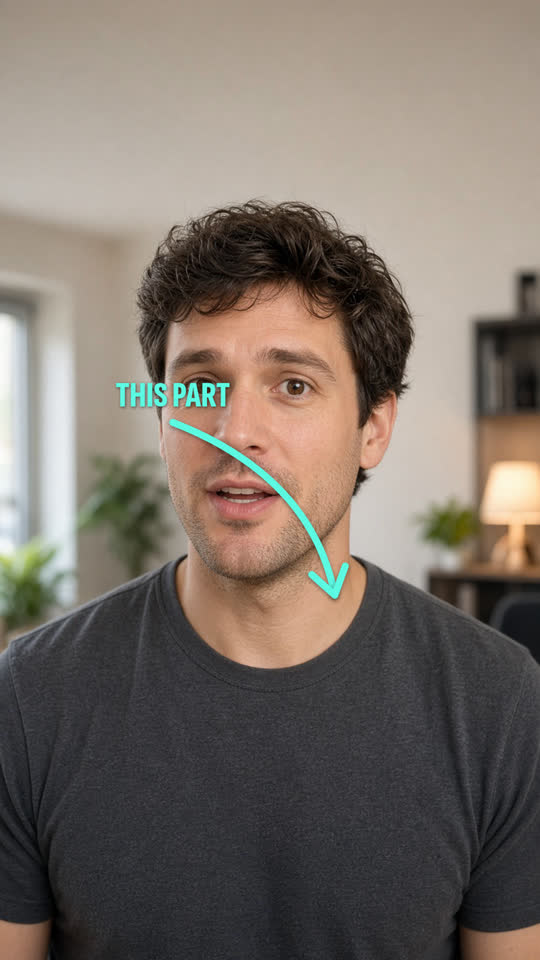
"mode": 16 (entrance draw-on)
highlight: a tapered marker circle, arrow, underline or box draws itself on with a glow, with an optional short label on an accent plate
"mode": 17 (entrance step-tick)
step counter: a plate with the step number rolling over in an accent disc, STEP 2 OF 5 beside it and a segmented bar that fills to the current step
"mode": 18 (entrance split-slam)
versus card: two halves slide in from the sides and a VS badge slams between them
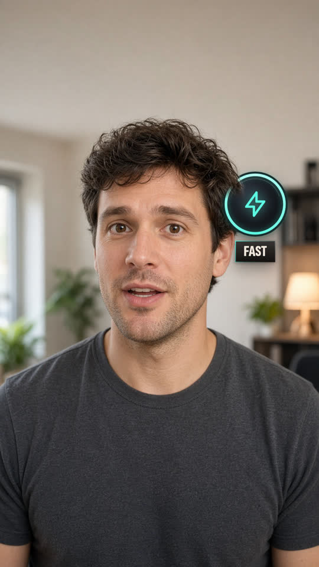
"mode": 19 (entrance badge-spin)
round icon badge: springs in while its conic ring draws round; a built-in glyph (Tabler icon) or your icon, with an optional label plate
"mode": 20 (entrance scatter-pop)
reaction stickers: a little cluster of die-cut vinyl stickers (hearts, stars, fire, sparks) springs in around a point and floats up
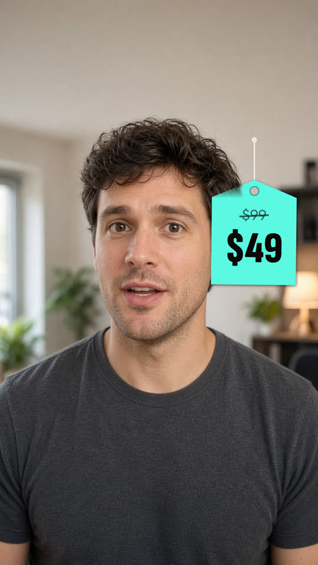
"mode": 21 (entrance chip-rise)
price tag: a price card rises and springs into place, the price big with a raised currency sign and an old price struck through above
"mode": 22 (entrance cta-rise)
call-to-action end card: a card rises with an avatar ring, your line and handle, and a follow button pulses with ripples
"mode": 23 (entrance type-on)
code snippet card: an editor window with a file tab, line numbers and a current-line band, the code typing itself on with syntax colour and a caret; the card widens or the type steps down so no line is clipped
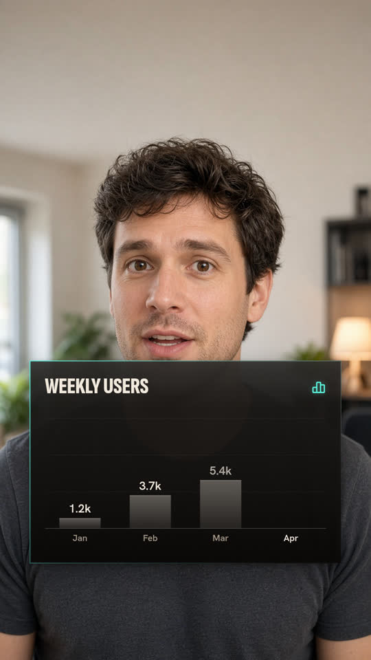
"mode": 24 (entrance bars-grow)
data chart card: gridlines draw, then each bar (or each point of a line) grows on its beat with a spring while its value counts up; the top value glows in the accent
"mode": 25 (entrance chapter-wipe)
chapter card: a soft scrim and accent rule, CHAPTER 02 and the title rising out of a mask line by line, a ghost numeral behind and progress ticks
"mode": 26 (entrance bug-in)
logo bug: your mark (an icon file, else a monogram tile in the accent) springs into a corner with its name on a dark plate; a slow sheen passes now and then
"mode": 27 (entrance bug-in)
channel bug: a red LIVE pill with a breathing dot, a running clock in tabular digits and the channel name, on dark plates in a corner
"mode": 28 (entrance term-rise)
terminal session: a terminal window rises; each $ command types on its beat with a spinner, then its output lands line by line (ticks green, errors red); a block cursor blinks
"mode": 29 (entrance strap-wipe)
news strap: a broadcast lower third; a light plate wipes out from an accent bar with the headline, a tag tab drops onto its top edge and the sub line slides in on a dark strip
"mode": 30 (entrance ticker-slide)
ticker: a full-width band rises from the bottom edge with a slanted accent label block; the items you say scroll right to left between accent diamonds
"mode": 31 (entrance flap-in)
split-flap board: hinged departure-board tiles flip through letters and land on your words left to right in Anton; a second row in the accent
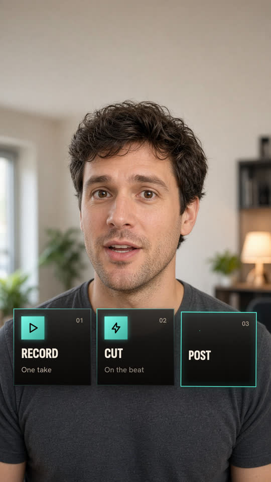
"mode": 32 (entrance cards-deal)
feature cards: two to four cards deal in side by side as you say each feature, with an icon tile in the accent, a number, the feature and a short line; the newest card glows
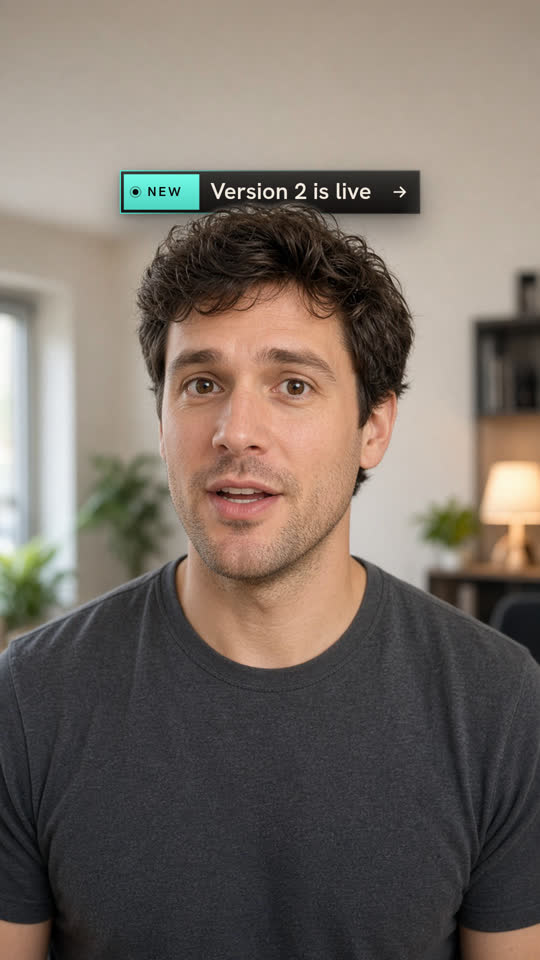
"mode": 33 (entrance pill-pop)
release pill: a glass pill springs in with an accent NEW chip (its dot pulsing a ring), your line and an arrow; a sheen sweeps across once
"mode": 34 (entrance button-press)
CTA button: a lit accent button rises, a pointer glides in and clicks it (the button squashes and flashes, a ripple rings out); a sub line under it
"mode": 35 (entrance lock-on)
HUD callout: corner brackets spin in and lock onto a region (a flash, centre ticks, a scan line), a leader line draws out with an elbow to a label that decodes into place
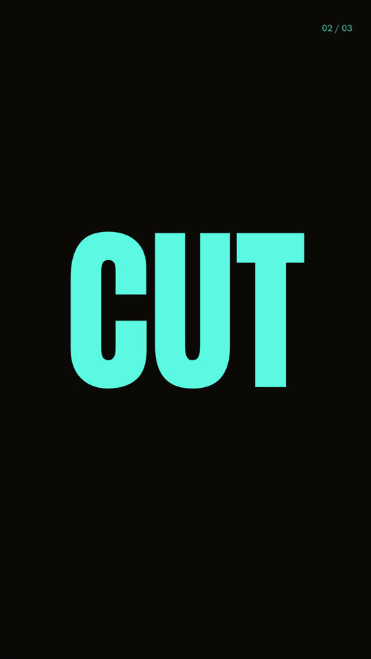
"mode": 36 (entrance flash-cut)
flash cards: full-bleed type cards, one word each in Anton, hard cut on each beat with a punch-in, alternating accent and ink grounds; covers the frame
"mode": 37 (entrance block-in)
keyword caption: a caption line rises word by word, then a solid accent block wipes in behind the keyword and its letters flip to ink on it; an optional tag above
Effects 51
Optional second pass (npm run fx). 51 starter effects, grouped by moment.
hook
First 2 s. Stop the scroll.
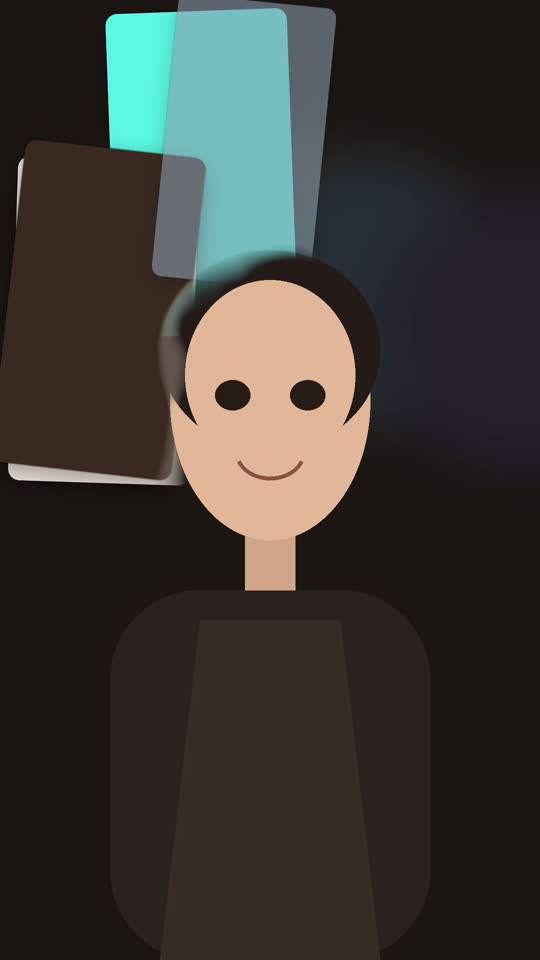
"fx": "noise"
Your reels (or frames from this clip) pile up behind your head, one every quarter second.

"fx": "locked-on"
Corner brackets snap onto your face and the camera follows you, with a tag pill under the face.
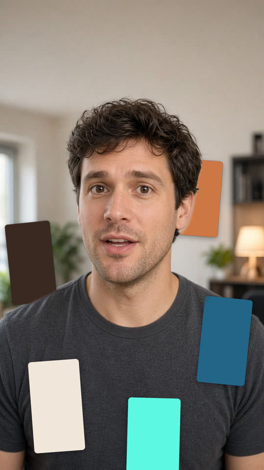
"fx": "orbit"
Your reels circle your head: in front at the bottom, behind you at the top.
"fx": "backdrop-word"
A giant word in tall type rises in behind you, letter by letter, with your head cutting into it.

"fx": "spotlight"
Kills the lights and keeps you lit, with an optional glowing word behind you. look=sparkle (alias glitter-spotlight) adds golden rays and sparkles.

"fx": "countdown-flip"
A 3, 2, 1 flip clock above your head.
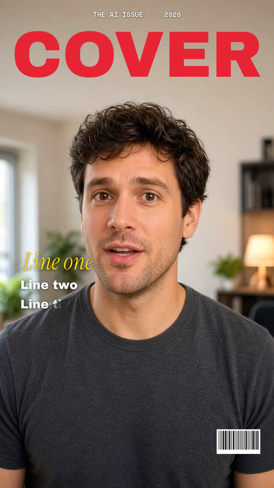
"fx": "cover-star"
You become a magazine cover, with the title behind your head and cover lines down the side. look=editorial for a classic warm cover.

"fx": "scribble"
Marker doodles draw themselves around you, with a label and arrow.

"fx": "glass-widgets"
Frosted glass widgets and mini artifacts (stats, profile, calendar, render bar) float around your head, with an optional "Edited by" pill near the bottom (off unless you opt in). look=simple for 3 widgets.

"fx": "red-collage"
Black-and-white you, a giant red word behind, three lines slam in beside you.
"fx": "split-headline"
A headline card slides down and pushes you into the bottom of the frame.

"fx": "pastel-word"
A soft lavender room, a giant word behind you and a profile card that gets followed.

"fx": "headline-box"
A punch-in with a two-line headline above your head, the second line in a white box.

"fx": "phone-fan"
Your reels fan out like a hand of phones under a two-line headline.

"fx": "dot-reveal"
Your shot builds itself out of glowing dots, then snaps into the full picture.
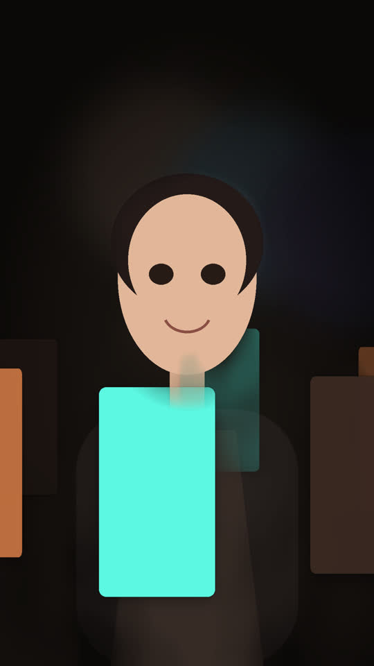
"fx": "carousel-spin"
Your reels spin around you in a 3D carousel, then slow to a stop.
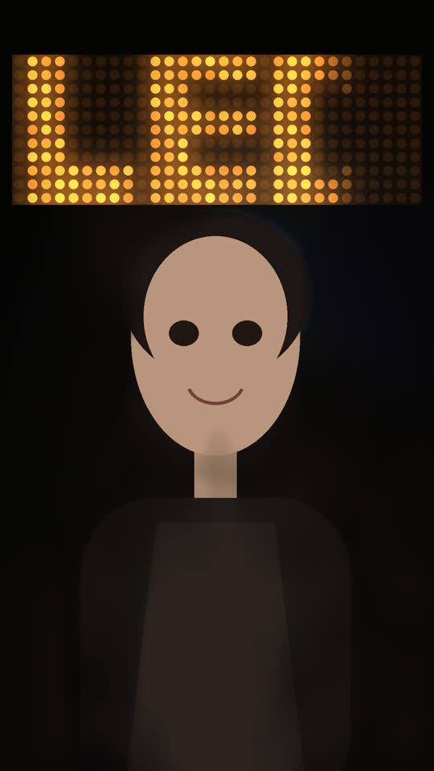
"fx": "led-sign"
The lights drop and a glowing LED sign types itself out behind you.
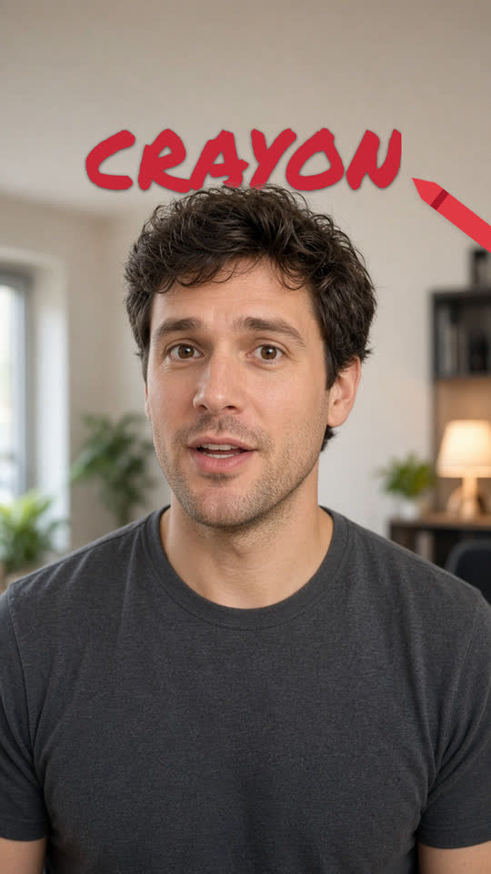
"fx": "crayon-write"
A red crayon writes your word behind your head, then underlines it and flies off.
claim
The key promise or bold statement.
"fx": "locked-on"
Corner brackets snap onto your face and the camera follows you, with a tag pill under the face.

"fx": "lean-in"
A fast punch-in on one word.
"fx": "backdrop-word"
A giant word in tall type rises in behind you, letter by letter, with your head cutting into it.
"fx": "red-collage"
Black-and-white you, a giant red word behind, three lines slam in beside you.
"fx": "split-headline"
A headline card slides down and pushes you into the bottom of the frame.
"fx": "headline-box"
A punch-in with a two-line headline above your head, the second line in a white box.

"fx": "tier-list"
A tier list drops in front of you and your item flies into S tier.
"fx": "match-cut"
News pages cut on one word, locked in a red box behind your head.

"fx": "slow-push"
A slow cinematic push-in to your face while the room melts out of focus.
"fx": "tape-label"
A level strip of yellow tape with your line lands on your chest.
"fx": "crayon-write"
A red crayon writes your word behind your head, then underlines it and flies off.
list
Steps, features, a numbered list.
"fx": "lineup"
Numbered tiles fan out in an arc above your head.
"fx": "the-bill"
Prints your instructions like a receipt into the wall above your head.
"fx": "todo"
A checklist card beside your head that ticks off as you talk.
"fx": "shortcut-rain"
Keyboard keys rain down behind you.

"fx": "check-pills"
Grid-paper room, reel boards pinned behind you and blue pills that a cursor clicks.

"fx": "checklist"
A task list builds under your chin: each step spins, then ticks green.
"fx": "apple-toggles"
An iPhone settings card flips its switches on, one line at a time. Default sits above you tucked behind your head with a gentle zoom; pos=below puts it under the chin.
reveal
The turn: "here is the thing", the answer.
"fx": "lean-in"
A fast punch-in on one word.
"fx": "backdrop-word"
A giant word in tall type rises in behind you, letter by letter, with your head cutting into it.
"fx": "spotlight"
Kills the lights and keeps you lit, with an optional glowing word behind you. look=sparkle (alias glitter-spotlight) adds golden rays and sparkles.

"fx": "swipe"
A before-and-after slider sweeps across you, with a pill label near the bottom.
"fx": "pause-point"
Freezes the frame and points at you with a hand-drawn arrow and label.

"fx": "reject-stamp"
A big red stamp slams onto the screen.
"fx": "countdown-flip"
A 3, 2, 1 flip clock above your head.

"fx": "rabbit-hole"
The room tunnels into itself, spinning, while you stay in front.
"fx": "scribble"
Marker doodles draw themselves around you, with a label and arrow.
"fx": "dot-reveal"
Your shot builds itself out of glowing dots, then snaps into the full picture.
"fx": "match-cut"
News pages cut on one word, locked in a red box behind your head.
"fx": "led-sign"
The lights drop and a glowing LED sign types itself out behind you.

"fx": "select-resize"
A blue selection box grabs your number above your head and a cursor drags it bigger.
"fx": "huge-strike"
One huge serif word wipes in behind your head, then a red line crosses it out.
proof
A number, a result, social proof.
"fx": "noise"
Your reels (or frames from this clip) pile up behind your head, one every quarter second.
"fx": "orbit"
Your reels circle your head: in front at the bottom, behind you at the top.
"fx": "the-bill"
Prints your instructions like a receipt into the wall above your head.
"fx": "swipe"
A before-and-after slider sweeps across you, with a pill label near the bottom.
"fx": "reel-frame"
Your video shrinks into an Instagram reel card.
"fx": "shortcut-rain"
Keyboard keys rain down behind you.
"fx": "cover-star"
You become a magazine cover, with the title behind your head and cover lines down the side. look=editorial for a classic warm cover.
"fx": "glass-widgets"
Frosted glass widgets and mini artifacts (stats, profile, calendar, render bar) float around your head, with an optional "Edited by" pill near the bottom (off unless you opt in). look=simple for 3 widgets.
"fx": "check-pills"
Grid-paper room, reel boards pinned behind you and blue pills that a cursor clicks.

"fx": "timeline"
A dark red cinematic grade with an editing timeline, a REC timecode and a glowing playhead.
"fx": "profile-wall"
Your reels grid fills the wall behind you while a view counter ticks up below your face.
"fx": "tier-list"
A tier list drops in front of you and your item flies into S tier.

"fx": "broll-split"
Split screen: b-roll on top with a price-tag sticker, you on the bottom.
"fx": "phone-fan"
Your reels fan out like a hand of phones under a two-line headline.

"fx": "headline-wall"
Your own headlines pile up behind your head, then a total pops in front.
"fx": "checklist"
A task list builds under your chin: each step spins, then ticks green.

"fx": "liquid-glass-graph"
A liquid glass card floats under your chin while a graph climbs and the number counts up. look=bento moves it to a smoked glass screen behind your head with tiles in front.
"fx": "carousel-spin"
Your reels spin around you in a 3D carousel, then slow to a stop.
"fx": "match-cut"
News pages cut on one word, locked in a red box behind your head.
"fx": "over-the-shoulder-zoom"
The camera pushes into one top corner and a liquid glass graph pops beside your head, pulls back, then the other corner with a second graph.

"fx": "messages"
iMessage notifications pop in one after another, stacking up just above 61% height.

"fx": "place-in-grid"
You shrink into the centre tile of your 3x3 profile grid, then 8 reels pop in around you with view counts.
"fx": "select-resize"
A blue selection box grabs your number above your head and a cursor drags it bigger.
"fx": "wave-trim"
A dark panel above your head shows your voice; the silent ends collapse until only your words are left.

"fx": "fan-build"
Your reel covers deal into a fan behind your head, one card at a time.
objection
"But..."/"No...", myth-busting, what not to do.
"fx": "lean-in"
A fast punch-in on one word.
"fx": "moody"
A colour grade: darker, softer, teal shadows. grade= moody, bw, warm, cool or pop.
"fx": "pause-point"
Freezes the frame and points at you with a hand-drawn arrow and label.

"fx": "uninstall"
A glitchy uninstall bar breaks the frame apart.
"fx": "reject-stamp"
A big red stamp slams onto the screen.
"fx": "slow-push"
A slow cinematic push-in to your face while the room melts out of focus.
"fx": "messages"
iMessage notifications pop in one after another, stacking up just above 61% height.
"fx": "huge-strike"
One huge serif word wipes in behind your head, then a red line crosses it out.
cta
The ask at the end: comment, follow, link.
"fx": "spotlight"
Kills the lights and keeps you lit, with an optional glowing word behind you. look=sparkle (alias glitter-spotlight) adds golden rays and sparkles.

"fx": "comment-box"
An Instagram comments sheet above your head types your word, posts it, gets a heart and your reply. look=bar for the old bottom bar.
"fx": "tap"
A Follow button pops up and flips to Following.
"fx": "countdown-flip"
A 3, 2, 1 flip clock above your head.
"fx": "pastel-word"
A soft lavender room, a giant word behind you and a profile card that gets followed.
"fx": "apple-toggles"
An iPhone settings card flips its switches on, one line at a time. Default sits above you tucked behind your head with a gentle zoom; pos=below puts it under the chin.
"fx": "led-sign"
The lights drop and a glowing LED sign types itself out behind you.
"fx": "slow-push"
A slow cinematic push-in to your face while the room melts out of focus.
"fx": "messages"
iMessage notifications pop in one after another, stacking up just above 61% height.
"fx": "place-in-grid"
You shrink into the centre tile of your 3x3 profile grid, then 8 reels pop in around you with view counts.
"fx": "tape-label"
A level strip of yellow tape with your line lands on your chest.
transition
Between sections or at a seam.
"fx": "moody"
A colour grade: darker, softer, teal shadows. grade= moody, bw, warm, cool or pop.
"fx": "uninstall"
A glitchy uninstall bar breaks the frame apart.
"fx": "reel-frame"
Your video shrinks into an Instagram reel card.
"fx": "rabbit-hole"
The room tunnels into itself, spinning, while you stay in front.
"fx": "timeline"
A dark red cinematic grade with an editing timeline, a REC timecode and a glowing playhead.
"fx": "broll-split"
Split screen: b-roll on top with a price-tag sticker, you on the bottom.
"fx": "dot-reveal"
Your shot builds itself out of glowing dots, then snaps into the full picture.
"fx": "slow-push"
A slow cinematic push-in to your face while the room melts out of focus.
"fx": "wave-trim"
A dark panel above your head shows your voice; the silent ends collapse until only your words are left.
SFX pack 37
37 CC0 sounds, auto-picked on npm run fx. Locked cut set is whoosh, swipe, boom, click, typing.
"sfx": "01-cinematic-hit-a" or sfxHits id
hit pack sound (2.592s, hit at 0.12s)
"sfx": "02-cinematic-hit-b" or sfxHits id
hit pack sound (3.024s, hit at 0.16s)
"sfx": "03-riser-tension" or sfxHits id
riser pack sound (3.456s, hit at 2.69s)
"sfx": "05-whoosh-fast" or sfxHits id
whoosh pack sound (1.08s, hit at 0.35s)

"sfx": "06-whoosh-cinematic-deep" or sfxHits id
whoosh pack sound (1.512s, hit at 0.68s)

"sfx": "07-whoosh-whip" or sfxHits id
whoosh pack sound (1.368s, hit at 0.31s)
"sfx": "08-swipe-up" or sfxHits id
swipe pack sound (0.672s, hit at 0.14s)

"sfx": "09-swipe-down" or sfxHits id
swipe pack sound (0.648s, hit at 0.1s)

"sfx": "10-pop-bubble" or sfxHits id
pop pack sound (0.408s, hit at 0s)

"sfx": "11-pop-sticker" or sfxHits id
pop pack sound (0.408s, hit at 0s)
"sfx": "12-ui-click-glass" or sfxHits id
ui pack sound (0.312s, hit at 0s)
"sfx": "13-ui-tick" or sfxHits id
ui pack sound (0.288s, hit at 0.18s)

"sfx": "14-ui-notification" or sfxHits id
ui pack sound (0.84s, hit at 0.16s)
"sfx": "15-glitch-digital-a" or sfxHits id
glitch pack sound (1.032s, hit at 0.52s)
"sfx": "16-glitch-digital-b" or sfxHits id
glitch pack sound (1.44s, hit at 0.93s)

"sfx": "17-camera-shutter" or sfxHits id
camera pack sound (0.912s, hit at 0.13s)
"sfx": "18-camera-flash" or sfxHits id
camera pack sound (0.48s, hit at 0.01s)

"sfx": "19-paper-scribble" or sfxHits id
paper pack sound (1.344s, hit at 1.05s)
"sfx": "20-cha-ching" or sfxHits id
counter pack sound (0.936s, hit at 0.47s)

"sfx": "21-counter-tickup" or sfxHits id
counter pack sound (0.984s, hit at 0.62s)

"sfx": "22-sub-drop" or sfxHits id
sub pack sound (2.088s, hit at 0.13s)
"sfx": "23-shimmer-sparkle-a" or sfxHits id
shimmer pack sound (0.576s, hit at 0s)

"sfx": "24-shimmer-sparkle-b" or sfxHits id
shimmer pack sound (2.424s, hit at 0.13s)

"sfx": "25-riser-pitch-sweep" or sfxHits id
riser pack sound (3.192s, hit at 3.05s)
"sfx": "26-riser-supersaw-swell" or sfxHits id
riser pack sound (3.576s, hit at 3.45s)
"sfx": "27-riser-pulse-accel" or sfxHits id
riser pack sound (3.336s, hit at 3.19s)
"sfx": "28-riser-shepard" or sfxHits id
riser pack sound (3.984s, hit at 3.85s)

"sfx": "29-release-downlifter" or sfxHits id
release pack sound (2.28s, hit at 0.07s)
"sfx": "30-release-pad-bloom" or sfxHits id
release pack sound (2.64s, hit at 0.24s)
"sfx": "31-release-airy-exhale" or sfxHits id
release pack sound (2.088s, hit at 0.06s)

"sfx": "32-release-resolve-chord" or sfxHits id
release pack sound (2.424s, hit at 0.17s)
"sfx": "33-ui-mouse-click" or sfxHits id
ui pack sound (0.36s, hit at 0.16s)
"sfx": "34-ui-key-press" or sfxHits id
ui pack sound (0.408s, hit at 0.11s)
"sfx": "35-ui-keyboard-typing" or sfxHits id
ui pack sound (2.424s, hit at 0.05s)
"sfx": "36-paper-flip" or sfxHits id
paper pack sound (0.48s, hit at 0.2s)
"sfx": "37-camera-clapper" or sfxHits id
camera pack sound (0.576s, hit at 0.13s)
"sfx": "38-camera-slate" or sfxHits id
camera pack sound (0.264s, hit at 0s)
Music beds 11
Our own tracks, loudness-matched to -13 LUFS. Hear them with the files in kit/music/.

--bed awaken-freedom or "bed": "awaken-freedom"
Awaken Freedom (51.2s, -12.9 LUFS)

--bed chopped-and-screwed-east or "bed": "chopped-and-screwed-east"
Chopped & Screwed East (133.6s, -13 LUFS)
--bed cinematic-build or "bed": "cinematic-build"
Cinematic Build (157.5s, -13 LUFS)
--bed distorted-silk-road or "bed": "distorted-silk-road"
Distorted Silk Road (174s, -13 LUFS)
--bed granular-stabs or "bed": "granular-stabs"
Granular Stabs (149.8s, -13 LUFS)

--bed houston-drumline or "bed": "houston-drumline"
Houston Drumline (136.8s, -12.9 LUFS)
--bed rise-with-the-bass or "bed": "rise-with-the-bass"
Rise with the Bass (155.6s, -12.9 LUFS)

--bed rise-with-the-beat or "bed": "rise-with-the-beat"
Rise with the Beat (176.2s, -12.9 LUFS)
--bed vinyl-sunrise or "bed": "vinyl-sunrise"
Vinyl Sunrise (94.9s, -12.8 LUFS)
--bed vinyl-velocity or "bed": "vinyl-velocity"
Vinyl Velocity (141.9s, -13 LUFS)
--bed yeehaw or "bed": "yeehaw"
YEEHAW (149.8s, -13 LUFS)
Brand presets 10
A saved mix of theme, look, type, finishes and favourites. npm run reel -- --preset <name>. Flags you pass win. --preset auto picks one and prints what it chose.
--preset aigent
AIgent brand, kinetic type, cyan accent (default)
--preset cinematic
Teal-and-orange film grade, grain, vignette
--preset editorial
Editorial serif lockup, restrained grade

--preset hormozi-bold
Bold caps, cyan on the spoken word, punchy cuts
--preset karaoke
Colour wipe as each word is said

--preset minimal-clean
Quiet type, hard cuts, little or no grade
--preset muse-pill
Pill captions and kinetic titles (front by default)

--preset neutral
Unbranded, offline, system fonts, no logo

--preset one-word
One big word at a time on screen, kinetic and punchy
--preset retro-scan-lines
CRT scan lines, chroma, a slightly worn grade